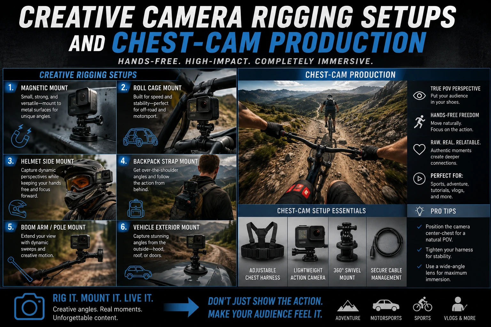
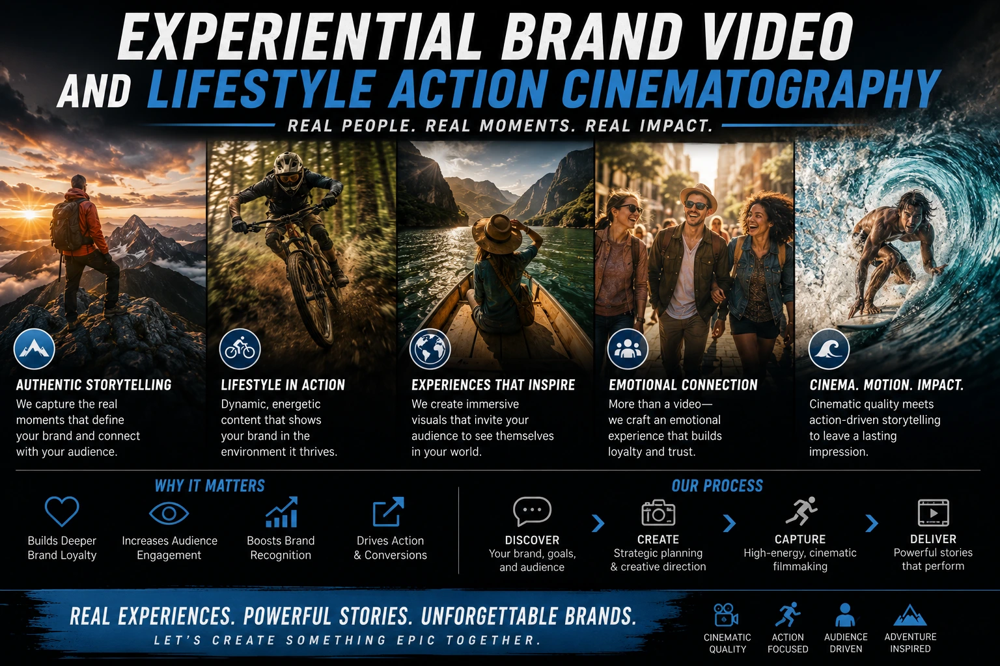

Camera Rigging Techniques That Place Your Customer Directly Inside the Action
Why Third-Person Video Is the Wrong Perspective for Experiential Brands
Standard commercial video shows you something. The model wears the product; you watch. The chef prepares the dish; you observe. The athlete uses the equipment; you see them from the sideline. This is third-person video — and it is the default framing of the overwhelming majority of commercial video content produced globally.
Third-person video is effective for communicating what a product looks like, who uses it, and what the experience of observing someone use it looks like. But for experiential brands — food and beverage, craft and artisanal production, fitness and lifestyle, travel and hospitality, D2C brands whose packaging experience is a core product element — the relevant question is not "what does this look like?" but "what does this feel like?" And third-person video is structurally incapable of answering that question, because it is always outside the experience, showing it from a distance.
Immersive POV video production answers the "what does this feel like" question by eliminating the distance — placing the camera where the customer's eyes would be, and producing video that simulates the experience of being inside the action rather than observing it from outside. The neurological effect of first-person commercial framing is measurably different from third-person observation — the mirror neuron system activates, embodied simulation begins, and the viewer feels a sense of presence and identification with the experience that no external camera perspective can produce.
The Mirror Neuron Mechanism: Why POV Video Converts Better
The commercial effectiveness of immersive POV video production is grounded in a specific neurological mechanism — the mirror neuron system — that activates in response to first-person visual perspective in a way it does not activate in response to third-person observation.
Mirror neurons are a class of motor neurons that fire both when a person performs an action and when they observe the same action being performed by another — but the firing is significantly stronger when the observation is from the first-person perspective of the actor rather than from the third-person perspective of an external observer. When a viewer watches video shot from a first-person perspective, their brain activates the same motor and experiential systems that would activate if they were performing the action themselves — producing a physiological experience of being in the body of the person whose perspective the camera represents.
For brands selling experiences — the experience of cooking a dish, wearing a garment, unboxing a premium product, performing a fitness routine, exploring an environment — this embodied simulation is the direct neurological route to desire. The viewer who feels themselves opening the premium packaging, feels themselves wearing the garment, feels themselves eating the meal, is a viewer who is emotionally rehearsing the ownership experience before making the purchase decision. And emotional rehearsal is one of the most reliable predictors of purchase conversion available.
Embodied Desire
First-person commercial framing activates the mirror neuron system, producing a physiological sense of inhabiting the experience — which is the neurological basis of desire. The viewer who feels themselves using the product has already partly experienced the ownership they are being asked to purchase.
Craft and Process Communication
POV camera rigs placed at the maker's hands-on perspective — the chef's eye view, the artisan's working position — communicate skill, care, and process quality in a way that communicates far more about the product's craft origins than any third-person process documentation.
Unscripted Authenticity
POV footage, particularly from chest-mount and body-worn rigs, has the visual character of personal documentation — the slightly imperfect framing, the natural hand movement, the environmental context that feels genuinely inhabited rather than staged. This authenticity quality is one of the most trust-building visual signals available.
Scroll-Stop Visual Novelty
First-person framing is visually distinct from the majority of commercial content in any feed — the perspective immediately signals "this is something different" before the viewer has processed what it is different about. The perspective novelty earns the initial attention before the content itself has had a chance to engage.

Creative Camera Rigging Setups: The Technical Toolkit
Creative camera rigging setups for first-person commercial framing range from simple action camera mounts to sophisticated custom rigs designed for specific commercial applications. The appropriate rig for each application is determined by the level of activity, the required video quality, the available budget, and the specific perspective the shot is designed to simulate.
The specific rig types and their commercial applications:
-
Head-mount or helmet-mount rig. A camera mounted at eye level on a
headband, helmet, or dedicated head-mount system — positioned to replicate the specific
visual field of someone looking forward. The head-mount produces the truest eye-level
first-person perspective available and is the rig most commonly associated with
action sports content. For commercial applications, it is most effective for active
lifestyle, fitness, and adventure brand content — any application where the viewer
should feel they are physically inhabiting a moving, active experience.
Equipment: GoPro HERO series with head strap mount for action applications; a mirrorless camera body (Sony ZV-E10, DJI Osmo Pocket 3) with a lightweight custom head rig for cinematic quality applications requiring higher resolution and better low-light performance than action cameras provide. -
Chest-mount rig. A camera mounted at the sternum — angled slightly
downward to include the hands and foreground in the frame — producing the chest-cam
marketing video perspective most associated with cooking, crafting, and
hands-on process content. The chest-mount position is lower than the eye-level head
mount, which makes it feel slightly more intimate and hand-focused — the viewer sees
approximately what the subject sees when they look down at what their hands are doing.
Equipment: GoPro chest harness for action applications; a custom chest rig built around a cage-mounted mirrorless camera body for cinematic quality applications. The chest rig can accommodate a wider range of lens choices than a head mount — a 16mm equivalent wide-angle lens produces the appropriate field of view for the chest perspective. -
Hand-mount and wrist-mount rig. A camera mounted on the back of the
hand or wrist — positioned to follow the hands' movement and show the working surface
from the working hand's perspective. This is the most intimate of the first-person
perspectives and is most effective for product creation, food preparation, and unboxing
content where the viewer should feel they are watching their own hands perform the
activity.
Equipment: GoPro wrist mount for action applications; a custom wrist rig or arm-extension rig holding a small mirrorless camera body for food and craft applications requiring higher image quality. - Overhead arm rig for top-down first-person simulation. A camera mounted on a monopod or articulating arm positioned above the subject's working surface — angled directly downward or at a slight angle forward — simulating the perspective of someone looking straight down at what is in front of them. This perspective is used for cooking videos (looking down into the pan or the preparation surface), unboxing videos (looking down at the package in the hands), and desk or workbench process documentation. It is not a body-worn rig but produces a genuinely first-person perspective when framed correctly.
- Gimbal body rig for cinematic active POV. A full 3-axis gimbal camera system worn as a chest rig — mounted on a vest harness that distributes the weight across the torso — allows a standard cinema or mirrorless camera body to be body-worn for extended periods while maintaining electronic stabilisation. This is the highest-quality POV rig available and is appropriate for brand films and commercial content where the production standard of the image is as important as the perspective it provides.
Chest-Cam Marketing Video: The Applications Library
Chest-cam marketing video is the most commercially accessible and most widely applicable creative camera rigging setup for Indian brands — because it requires minimal equipment investment, produces immediately recognisable authentic aesthetics, and serves a wide range of commercial contexts with genuine experiential value.
The specific commercial applications for chest-cam marketing video:
Food and Beverage Brands
- Cooking process from the chef's working perspective — hands, ingredients, pan
- Plating and presentation from the server's above-table perspective
- Market sourcing from the cook's walking-through-the-market perspective
- Coffee preparation from the barista's station perspective — particularly effective for specialty coffee brands communicating craft
Craft and Artisanal Brands
- Textile production from the weaver's loom-level working perspective
- Jewellery making from the jeweller's workbench perspective
- Pottery and ceramic making from the wheel-level working perspective
- Packaging and fulfillment from the packing table perspective — particularly valuable for D2C brands communicating care in the packing process
Fitness and Lifestyle Brands
- Training sessions from the athlete's perspective — weight training, yoga, sports
- Outdoor adventure content from the participant's active perspective
- Commute or travel from the traveller's street-level moving perspective
- Morning routine content from the personal self-care perspective — relevant for beauty and wellness brands
Unboxing from the Viewer's Eyes: The Highest-Converting D2C Format
Unboxing from the viewer's eyes is the POV camera rigging application that produces the most measurable commercial impact for D2C e-commerce brands — because it allows the brand to communicate the complete packaging experience from the inside, at the specific moment when the viewer's mirror neuron system is most activated by the recognition of an experience they have had or anticipate having.
The specific production approach for unboxing from the viewer's eyes:
- Camera position: eye-level overhead, looking down at hands-held package. The camera is positioned on an overhead arm or monopod rig at approximately the height of the subject's eyes — 150 to 170cm from the surface — angled slightly forward so that both the package and the hands holding it are visible in the lower portion of the frame, with a slight environmental context visible in the upper portion. This framing replicates the exact visual perspective of looking down at a package in one's own hands.
- Hands in frame throughout: the embodiment anchor. The hands — the specific physical indicators that this is a first-person perspective — must remain in frame throughout the entire unboxing sequence. A POV unboxing video from which the hands disappear between stages communicates that a different person or camera is involved, breaking the first-person perspective illusion. The hands are the embodiment anchor of the POV format; their continuous presence is what maintains the viewer's identification with the perspective.
- Real-time audio: the sensory completeness layer. The sound of the unboxing — the paper, the tape, the tissue, the box opening, the product reveal — is as important to the embodied experience as the visual. A professionally recorded close-up microphone positioned near the unboxing action captures the specific acoustic texture of each packaging element — which triggers the ASMR-adjacent sensory anticipation response that makes unboxing content one of the most re-watched video formats available.
- Slow progression with visual pauses at each reveal layer. The unboxing sequence should be paced to linger at each layer of the packaging reveal — the outer box lid lifting slowly, the tissue paper parting, the insert card appearing, the product emerging. Each pause allows the viewer's embodied simulation to fully register each stage before the next begins — which is the pacing that produces the maximum anticipation and satisfaction arc that makes unboxing content commercially powerful.

Behind-the-Lens Product Creation: The Maker's Perspective
Behind-the-lens product creation content — video shot from the maker's first-person perspective during the actual production of the product — is one of the most powerful trust-building content formats available to Indian artisanal, handcraft, and premium brands. It communicates the specific qualities of handmade production — the individual attention, the skilled hands, the real process — in the most direct possible visual format: by placing the viewer inside the maker's experience.
The specific production applications for behind-the-lens product creation content:
- Textile weaving from the weaver's loom perspective. A camera mounted at chest or eye level shows the weaver's hands moving across the loom — the specific physical dexterity of handloom weaving visible in a way that no external documentation can communicate. For Madurai and Tamil Nadu textile brands, this perspective communicates the craftsmanship that distinguishes handloom from machine production with the most direct visual evidence available.
- Jewellery crafting from the jeweller's bench perspective. The chest or overhead perspective of a jeweller's working surface — the tools, the metal, the stone, the hands positioning and securing — communicates the precision and care of handcrafted jewellery in a way that even the most detailed macro photography cannot, because it shows the hands performing the work in real time.
- Food preparation from the cook's working perspective. The chest-cam perspective of a restaurant kitchen or home kitchen during genuine food preparation communicates the craft and care of the cooking process in the most intimate possible format — the viewer is inside the cook's experience, watching the same hands that will produce the food they are being asked to order or buy the product to prepare.
- Product assembly and quality control from the production line perspective. For manufacturing and artisanal brands whose quality story involves precision assembly or careful quality inspection, the first-person perspective of a production line worker or quality inspector communicates care and attention at the human level that no external factory tour footage can replicate.
High-Engagement Action Cinematography: The Active Lifestyle Application
High-engagement action cinematography through POV camera rigging is the application most associated with the format — and it is the application that has produced the largest body of evidence for the commercial effectiveness of first-person perspective in brand video content. Action sports brands, fitness equipment companies, outdoor gear brands, and active lifestyle labels have all demonstrated that POV camera content produces engagement rates, completion rates, and purchase intent scores that third-person equivalent content cannot match.
The production principles for high-engagement action cinematography through POV rigs:
- Real performance, not staged demonstration. The action in POV footage must be genuine — real physical performance, real effort, real environment. The first-person perspective exposes performance staging immediately: the viewer who is inhabiting the perspective can feel when the movement is controlled for the camera rather than executed for the activity. Staged action in a POV rig produces the most immediately unconvincing content available; genuine performance produces the most immediately compelling.
- Environment as co-subject. In action cinematography POV content, the environment the action is performed in is as important as the action itself — because the viewer is inhabiting the environment as much as performing the action. Location selection for active lifestyle brand POV content should prioritise environments that communicate the brand's lifestyle world most compellingly from the inside: the specific terrain, the specific light, the specific scale that makes the environment feel like a place the viewer wants to inhabit.
- Stabilisation calibrated to the activity's natural movement character. The amount of electronic stabilisation applied to action POV footage should be calibrated to preserve the natural movement character of the activity — not eliminate all movement in pursuit of a smooth camera aesthetic. A trail run should feel like a trail run: some bounce, some directional shift, the specific visual rhythm of moving feet on uneven terrain. Over-stabilised action POV footage feels dissociated from the experience it is meant to simulate.
Experiential Brand Video Clips: Building the Lifestyle Brand Assets Library
Experiential brand video clips produced through POV camera rigging form the foundation of a lifestyle brand assets library — a collection of first-person perspective clips that communicate the brand's world from the inside rather than from the outside, and that serve the full range of the brand's content needs across social media, advertising, and website.
The lifestyle brand assets library built from a single POV production session:
- Short social media clips (15 to 30 seconds): Individual POV experience moments — a single cooking step, a single product creation moment, a single active lifestyle sequence — edited with music and deployed as Instagram Reels and YouTube Shorts. Each clip is a standalone experiential moment that communicates the brand's lifestyle world in a format optimised for organic social media distribution.
- Full experience films (60 to 90 seconds): A complete first-person journey through the brand's core experience — from the beginning to the satisfying conclusion — edited as a cohesive narrative with sound design, music, and pacing that communicates the full arc of the experience. This format is used for website hero content, YouTube brand content, and longer-form paid advertising placements.
- Paid advertising creative variants: Multiple 15 to 30 second cuts from the same POV footage, each with a different opening hook, tested against each other as paid advertising creative to identify which experiential moment in the first three seconds produces the strongest click-through and conversion performance.
- Instagram Story and Reels series: A series of connected POV clips — each representing one stage of a longer experience — published as a multi-episode social series that builds engagement through episodic narrative structure, with each clip complete in itself but more rewarding in sequence.
Conclusion
Immersive POV video production, first-person commercial framing, and the full range of creative camera rigging setups — from chest-cam marketing video to overhead unboxing from the viewer's eyes to active lifestyle high-engagement action cinematography — are the production tools that close the distance between the viewer and the brand's experience.
Third-person video shows experiences. First-person commercial framing places the viewer inside them. The neurological difference between observing and inhabiting — between watching someone else use a product and feeling yourself use it — is the commercial difference between interest and desire. And desire, not interest, is what drives the purchase decisions that lifestyle brand assets built on POV production consistently produce.
At The PhD Ads, we produce immersive POV video production and experiential brand video clips for Indian brands across food, craft, lifestyle, fitness, and D2C categories — creative camera rigging setups from chest-cam to overhead to active body rig, building the lifestyle brand assets library that places your customer inside the experience your product delivers.
Key Topics
Ready to Place Your Customer Inside Your Brand's Experience?
At The PhD Ads, we produce immersive POV video production for Indian brands — creative camera rigging setups, chest-cam marketing video, unboxing from the viewer's eyes, and experiential brand video clips that close the distance between the viewer and the brand's world.
Email: team@e2o.in